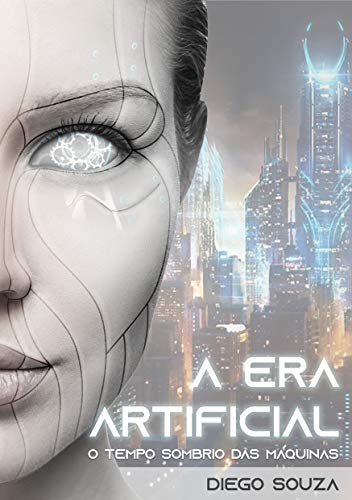

Informações Sobre o autor

Gabriel Souza é apaixonado por tecnologia e trabalha com desenvolvimento Web. Também é um eterno fã de ficção científica e escritor nas horas vagas. Carioca da gema, ama o Rio de Janeiro, cidade onde nasceu.

A história em que a inteligência artificial permitou aos robôs se tornarem a espécie dominante do nosso planeta. Uma luta incessante pela sobrevivência humana tem um início em um cenário catastrófico dominando pela gerra e pelo caos.
Era Artificial - O Tempo das Máquinas deixa o leitor apreensivo com algumas situações que ocorrem em um cenário catastrófico tomado pela destruição. E isso leva a refletir: veremos um dia a tão temida singularidade tecnologica?
Gabriel Souza é apaixonado por tecnologia e trabalha com desenvolvimento Web. Também é um eterno fã de ficção científica e escritor nas horas vagas. Carioca da gema, ama o Rio de Janeiro, cidade onde nasceu.
O livro A Era Artificial apresenta um cenário no qual os robôs alcaçaram a sua independência e, com isso, se tornaram a espécie dominante do planeta terra. De que forma a humanidade pode enfrentar esse poderos inimigo?
Esses e mais detalhes podem ser vistos na história de ficção científica que promete fazer você refletir sobre o futuro da humanidade!